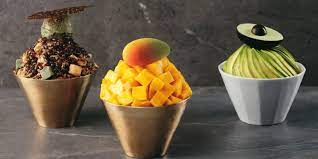

Bingsu

Ingredients (2 servings)
- 2 cups shaved ice or ice shavings
- 2 tablespoons sweetened condensed milk
- 1/2 cup red bean paste (canned or homemade)
- 1/2 cup fresh fruits (strawberries, mango, kiwi, etc.), sliced
- 2 tablespoons fruit syrup (strawberry, mango, or your choice)
- 2 tablespoons chopped nuts (optional, for garnish)
- 1 tablespoon small rice cakes (tteok)
- Vanilla ice cream (optional, for topping)
Preparation
ASSEMBLE BINGSU
Step 1
- Prepare shaved ice or use pre-shaved ice if available.
Step 2
- Place the shaved ice in serving bowls or a shallow dish.
Step 3
- Drizzle sweetened condensed milk over the shaved ice.
Step 4
- Spoon red bean paste over the ice, distributing it evenly.
Step 5
- Arrange sliced fresh fruits on top of the ice.
Step 6
- Drizzle fruit syrup over the fruits and ice.
Step 7
- Top with small rice cakes (tteok) and chopped nuts if desired.
Step 8
- If you like, add a scoop of vanilla ice cream on top for extra indulgence.
Step 9
- Serve the Bingsu immediately and enjoy the refreshing Korean shaved ice dessert!